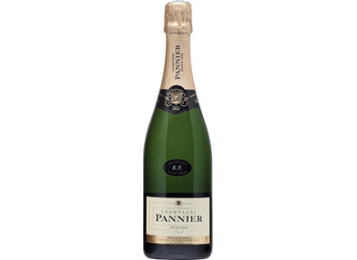
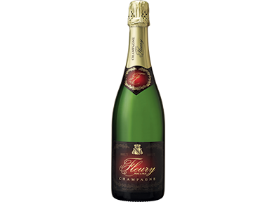
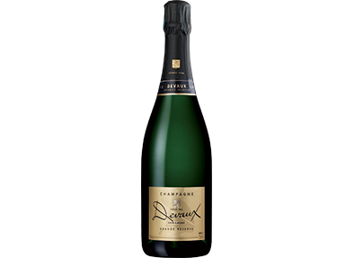
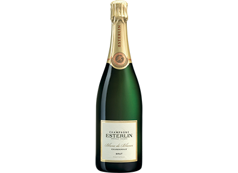
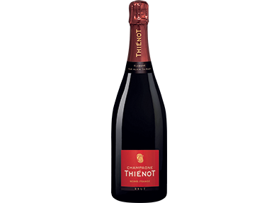
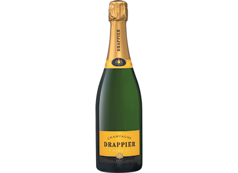
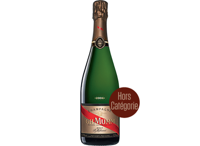
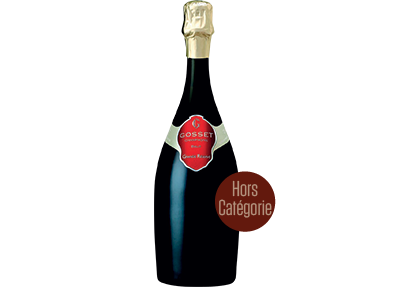

Palmarès des vins effervescents et champagnes 2014 Nos 40 bouchons d'or
Après une implacable sélection notre jury vous propose ses 40 bouchons d'or, 40 bouteilles offrant le meilleur rapport qualité prix. Pour y arriver XXXX bouteilles ont été goûtées, 113 jugées intéressantes ont fait l'objet d'une dégustation à l'aveugle et seules 40 ont été sélectionnées.
Vous trouverez également des bouteilles hors catégories. Issues des maisons les plus prestigieuses, mais au-dessus du budget de 30 euros, ces champagnes promettent de très grands moments.
Téléchargez votre liste de courses
- Tous
- De 5
à 14 € - De 14
à 19 € - De 20
à 20,50 € - De 26
à 28 € - De 28
à 30 € - De 35
à 45 € - ?
-

Séduisant
Meilleur rapport qualité/prix de notre palmarès, c’est notre chouchou ! Avec la finesse de son fruité, sans sucrosité, ce crémant de pinot blanc a vraiment tout pour séduire. Parfait à l’apéritif ou avec une volaille. Chez Leader Price15,2
4,99 €
Crémant d’Alsace brut Henri Peter
Coup de coeur -

Exotique
Il ne récolte pas notre meilleure note, mais le cava le plus connu et le plus apprécié des Français s’en sort très honorablement. Notre jury a apprécié sa fraîcheur, sa légèreté… et son petit prix. Idéal pour faire la fête jusqu’au bout de la nuit ! En grandes et moyennes surfaces13,6
5,95 €
Cordon Negro, cava brut Freixenet
-

Élégant
Ce crémant millésimé issu uniquement de chardonnay a bénéficié de dix-huit mois d’élevage, qui expliquent son joli cordon de bulles, sa belle finesse en bouche et sa grande élégance. Pour accompagner une poêlée de langoustines. A la cave, www.noir-freres.com14
7,50 €
Crémant du Jura brut 2012, Domaine de la Petite Marne Noir Frères
-

Fruité
Issu de pinot noir, ce crémant présente une robe gris rosé. Sa bouche fruitée offre de l’équilibre et de la finesse dans une belle persistance. Pour tout le repas. A la cave, www.dopff-au-moulin.fr14,4
11,10 €
Crémant d’Alsace blanc de noirs brut 2011 Dopff au Moulin
-

Droit
Ce vin biodynamique (cultivé selon les rythmes de la lune) offre de jolies notes florales, de la minéralité et une belle droiture. Idéal pour un filet de sandre au beurre blanc. Chez les cavistes et à la cave, www.françois-chidaine.com13,8
11,90 €
Montlouis-sur-Loire brut méthode traditionnelle François Chidaine
-

Corpulent
La Loire produit aussi de très beaux effervescents, tel ce saumur élevé en fût de chêne. Une belle vinosité, beaucoup de structure en bouche, de l’équilibre et une finale persistante. Pour tout le repas, même avec une viande rouge. Chez les cavistes14,5
13,60 €
Trésor, saumur brut millésimé 2009 Bouvet-Ladubay
-
Aromatique
Avec ses arômes de noisette, ce crémant pur chardonnay offre un beau fruité, de la structure et beaucoup de fraîcheur. A l’apéritif ou avec une viande blanche. A la cave www.domaines-piron.fr13,8
10 €
Crémant de Bourgogne brut Domaine Piron
-

Gourmand
C’est l’unique prosecco retenu dans notre sélection. Beaucoup de gourmandise et de suavité, équilibrées par une légère amertume très rafraîchissante. Pour un apéritif festif entre amis. Au repaire de Bacchus13,8
12,60 €
Prosecco Treviso Val de Cune
-

Rond
Ses fines notes de brioche dévoilent une bouche ronde et gourmande sur des arômes de poire, une belle structure et une acidité rafraîchissante. Idéal à l’apéritif, il peut accompagner aussi un poisson grillé. A la cave www.champagne-barfontarc.com14,5
13,95 €
Brut tradition De Barfontarc
-

Mûr
A dominante de pinot noir (70 %), cette cuvée offre un nez mature sur des notes de fruits cuits. La bouche est ronde et structurée, un peu dosée, mais avec une belle finale. Un champagne pour le repas. A la cave www.champagnemarin.fr14,8
15,60 €
Cuvée prestige brut Christian Marin & Fils
-

Mûr
A base de pinot meunier, ce champagne surprend par la complexité de ses arômes de fruits confits (coing). La bouche aux accents exotiques et d’agrumes offre une amertume très rafraîchissante. Avec un filet de canard. A la cave www.champagne-jose-michel.com14,6
16,75 €
Pinot meunier brut José Michel & Fils
-

Complexe
Ses effluves fleuris laissent place à une attaque franche et à une belle complexité en bouche, où se mêlent arômes de fruits blancs et de fruit de la passion. A l’apéritif ou en accompagnement d’un plat exotique. Chez Leader Price15,2
15,95 €
Brut Armand & Lucie
-

Rosé
Belles notes de rose et de framboise, avec des accents de confiture de fruits noirs. Belle structure, à la fois gourmande et élégante. A la cave www.champagne-breton-fils.fr15,3
18,50 €
Brut Rosé Breton Fils
-

Riche
Ce champagne élaboré selon la méthode par saignée (dont la fermentation débute comme pour un vin rouge) a séduit notre jury. Robe rose foncé, nez riche et bouche gourmande, avec des notes d’agrumes et une longue finale. A savourer avec un dessert aux fruits rouges. A la cave www.champagnedumont.fr15,5
16,50 €
Brut Rosé Dumont & Fils
Coup de coeur -
Limpide
Entre vivacité et gourmandise, ce champagne présente une robe d’un rose orangé limpide, une bouche très fruitée aux accents citronnés qui apporte de la fraîcheur et une belle tension. Chez Franprix14,5
16,99 €
Cuvée spéciale brut rosé Galucha
-

Raffiné
Avec trente mois de cave, cette cuvée offre beaucoup de finesse et d’élégance. La bouche, tout en rondeur, n’en reste pas moins vive et présente une belle structure. Pour un apéritif raffiné. A la cave www.champagne-jacquinot.com13,8
16,95 €
Private Cuvée brut Jacquinot & Fils
-

Profond
Son nez révèle des parfums d’épices, de fleurs et de miel. L’attaque sur les agrumes évolue vers la rondeur avec une finale qui laisse sans voix. Idéal avec un homard grillé. A la cave www.chassenay.com16,8
22 €
Brut Cuvée première Chassenay d’Arce
Coup de coeur -
Vif
Un pur chardonnay millésimé au nez citronné et fleuri, à la bouche briochée et à la finale rafraîchissante. Pour un apéritif subtil. A la cave www.champagnejeanjosselin.fr16
19,90 €
Blanc de blancs brut 2009 Jean Josselin
-

Structuré
Faiblement sucré, il a une attaque franche, puis dévoile rondeur et vivacité. Peut accompagner tout un repas. A la cave www.champagne-waris-larmandier.com14,6
20 €
Blanc de blancs extra brut grand cru Waris-Larmandier
-

Mentholé
A dominante de cépages noirs, ce champagne vif et élégant exprime des notes mentholées et d’agrumes. Dès l’apéritif et pour accompagner des coquillages. A la cave www.champagne-alexandre.fr16,4
20 €
Brut noir Yann Alexandre
-

Velouté
Ce blanc de noirs cultivé en biodynamie (en respectant les rythmes de la lune) offre un nez complexe sur les fruits à noyau et la praline. Sa bouche veloutée accompagne des fromages typés, comme le livarot. Chez les cavistes14,8
25,50 €
Brut bio Leclerc Briant
-
Onctueux
Un joli nez à la pointe d’amande, de la rondeur, des arômes de fruits jaunes et d’agrumes, une finale élégante. Parfait avec une volaille rôtie aux pommes. Chez les cavistes16,3
25 €
Référence brut Lombard & Cie
-

Minéral
Un champagne d’amateur qui offre le tranchant d’une lame de rasoir et un corps charpenté. Une minéralité qui fera merveille avec des fruits de mer. Chez Lavinia15
23,90 €
Sainte-Anne brut Chartogne-Taillet
-

Citronné
Le nez est à la fois floral et fruité. Ronde, la bouche est désaltérante, avec une finale citronnée. Sur des noix de Saint-Jacques poêlées. A la cave www.pertoismoriset.com14,8
23,50 €
Grande réserve, blanc de blancs brut Pertois-Moriset
-

Expressif
Cette cuvée ravit dès son nez de fruits jaunes et d’agrumes. Joliment structurée, elle joue l’équilibre entre richesse et tension. Un champagne de gastronomie à l’excellent rapport qualité/prix. A la cave www.champagne-hure-freres.com16,5
26 €
Instantanée, extra brut 2006 Huré Frères
-

Gourmand
Un nez complexe aux saveurs briochées, florales et de fruits jaunes. La bouche est gourmande, ample et d’une belle fraîcheur portée par l’acidité, pour une finale persistante et précise. A l’apéritif, mais aussi avec des huîtres. Chez les cavistes16
26 €
Brut sélection Pannier
-

Aérien
Beaucoup de finesse pour cette cuvée qui a vieilli cinq ans en cave. Très aérienne au nez, elle révèle une bouche de fruits mûrs et secs, d’un bel équilibre. La finale, fraîche et longue, est élégante. Se marie à la perfection avec un tartare de lotte aux agrumes. En grandes et moyennes surfaces14,8
26 €
Cuvée spéciale 2006 brut Nicolas Feuillatte
-
Savoureux
D’une belle intensité sur des notes d’amandes grillées au nez, cette cuvée offre une attaque très fraîche qui évolue vers une rondeur fruitée et une finale savoureuse. Avec des cailles aux raisins. Chez les cavistes15,8
27 €
Réserve brut De Castelnau
-
Délicieux
Après des notes de pêche, d’abricot et de fruit de la passion, sa bouche révèle des saveurs toastées et épicées. Sa rondeur digne d’un millésimé en fait un très beau champagne pour un apéritif d’exception. Chez les cavistes17
27 €
Brut Henri Abelé
-

Épuré
Sans fioriture ni artifice, ce champagne très peu dosé en sucre est un plaisir. De la droiture et de la vivacité, aérien avec une belle ampleur, c’est un chef-d’œuvre d’équilibre. A l’apéritif et pendant le repas, on ne s’en lasse pas ! Sur www.millesimes.com/a>17,5
27,90 €
Latitude extra brut Larmandier-Bernier
Coup de coeur -

Épicé
D’une belle maturité au nez sur des notes épicées, ce champagne se révèle ample et structuré en bouche, très fruité, avec beaucoup de vivacité. Avec un canard rôti au miel et aux épices. Sur www.vin-malin.com/a>15,3
27,90 €
Grand brut Perrier-Jouët
-

Bio
Certifiée Demeter et Biodyvin, cette cuvée 100 % pinot noir offre un nez floral et d’agrumes, une bouche très riche et une finale tendue très rafraîchissante. Parfait avec une sole au beurre blanc. Chez Biocoop15,8
27 €
Blanc de noirs bio brut Fleury
-
Exceptionnel
Arômes beurrés, fruité de l’abricot, bouche précise, ample et élégante, un bel équilibre et une finale savoureuse. Un style racé pour accompagner vos repas de fêtes. Chez les cavistes17
28 €
Grande réserve grand cru brut Lallier
Coup de coeur -

Harmonieux
Très belle réussite que cette cuvée du millésime 2008. Ses notes de fruits compotés, légèrement toastées, sa bouche à la fois ronde et puissante et sa finale persistante en font un champagne parfait pour accompagner un gigot de sept heures. En grandes et moyennes surfaces16,5
28 €
Authentic Vintage 2008 brut Canard-Duchêne
-

Stylé
Des notes de fruits mûrs et de brioche accompagnent une belle structure en bouche, fine et ronde. La finale se fait friande, avec des notes de fruits jaunes et une pointe d’amertume rafraîchissante. Idéal avec un ris de veau aux morilles. Chez les cavistes16
29 €
Grande réserve brut Devaux
-

Inoubliable
Un blanc de blancs frais et minéral. La bouche aux arômes de fruits blancs est ronde et vive. La finale, d’une bonne longueur, est fruitée. Un champagne délicat qui peut accompagner tout un repas. Chez les cavistes16,8
29 €
Exclusif brut Esterlin
-

Épanouissant
Son long vieillissement explique la finesse de cette cuvée aux senteurs fruitées et florales. La bouche exprime une belle maturité, et la finale est désaltérante. A l’apéritif ou avec un rôti de veau. Sur www.millesimes.com/a>15,8
30 €
Réserve brut Pol Roger
-

Printanier
Beaucoup de fraîcheur et de vivacité pour ce champagne qui révèle des notes de fruits du verger, une belle richesse en bouche et de la longueur en finale. Idéal à l’apéritif. Chez les cavistesa>15,3
30 €
Brut Thiénot
-

Historique
C’est le champagne que le général De Gaulle consommait à La Boisserie, sa résidence de Colombey-les-Deux-Eglises (Haute-Marne). A 80 % minimum de pinot noir, il exprime des arômes de coing et de fruits blancs, des notes briochées et offre une belle structure, avec une finale légèrement épicée. Chez les cavistesa>15,8
30 €
Carte d’or brut Drappier
-

Floral
Très florale au nez, cette cuvée s’exprime tout en finesse et en complexité. En bouche, ses saveurs d’agrumes, de fruits mûrs et de fleurs se révèlent dans une belle richesse, accompagnées de notes miellées. La finale reste très rafraîchissante. Chez Lavinia15,8
30 €
Tradition brut De Sousa & Fils
-
Précurseur
Créé en 1874, c’est le premier brut de l’histoire de la Champagne. Pour ses 140 ans, cette cuvée offre élégance et vivacité, avec des notes d’agrumes et de fleurs blanches, et une belle finale. En grandes et moyennes surfaces0
35 €
Brut royal Pommery
Coup de coeur -

Ambassadeur
Composé de 55 crus de Champagne, le Laurent-Perrier Brut est la signature du style de cette grande maison. Dominé par le chardonnay, il apporte de la fraîcheur, de l’équilibre et de la finesse. Pour un apéritif très chic. En grandes et moyennes surfaces0
34,90 €
Brut Laurent-Perrier
-

Millésimé
Issu d’une unique année de récolte (2006), il allie la richesse du pinot noir (64 %) et la finesse du chardonnay. Avec ses saveurs de fruits jaunes, il est le compagnon parfait de tout un repas. En grandes et moyennes surfaces0
34 €
Le Millésimé 2006 brut G.H. Mumm
-

Équilibré
Composée d’une majorité de pinot noir, de meuniers des montagnes de Reims et d’une centaine de crus, cette cuvée emblématique offre un nez vif aux arômes de fruits frais. Ample, structuré et équilibré. En grandes et moyennes surfaces0
35 €
Brut Piper-Heidsieck
-
Classique
Fruit d’un assemblage de six années de vendanges, cette cuvée offre une texture ample et charnue associée à des notes fruitées et rafraîchissantes. Un grand classique à boire en toutes circonstances. Chez les cavistes0
41 €
Brut Premier Louis Roederer
-
British
Complexité aromatique (fruits mûrs, épices, brioche), structure et vivacité caractérisent ce vin qui accompagnera aussi bien une langouste qu’un vieux parmesan. Chez les cavistes0
44 €
Special Cuvée Bollinger
-
Emblématique
Ce brut structuré et vineux, à dominante de cépages noirs, caractérise le style de la maison. Entre notes fruitées et briochées, l’attaque est franche et tonique et laisse place à une belle persistance. A l’apéritif ou tout au long du repas. En grandes et moyennes surfaces0
38 €
Brut Veuve Clicquot
-

Gastronomique
Assemblage de trois millésimes, ce champagne de gastronomie sélectionné par de nombreux chefs fait merveille de l’apéritif au dessert. Il se marie idéalement avec les plats sucrés-salés. Chez les cavistes0
41 €
Grande réserve brut Gosset
L'abus d'alcool est dangereux pour la santé, consommez avec modération